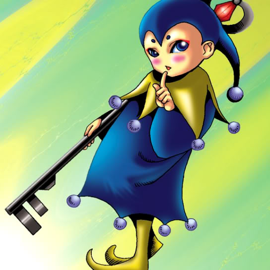

Key Mace

Description: "When this card is flipped face-up, shifts all cards to defense position."
STATS
ATK: 400
DEF: 300DECK COST
Deck Cost per Card: 12EFFECT NOT IMPLEMENTED
Fusion List (53 Possible Fusions)
- Key Mace + Abyss Flower = Queen of Autumn Leaves
- Key Mace + Air Marmot of Nefariousness = Nekogal #2
- Key Mace + Ancient Jar = Mystical Sand
- Key Mace + Fairywitch = Dark Witch
- Key Mace + Arlownay = Queen of Autumn Leaves
- Key Mace + Barrel Lily = Queen of Autumn Leaves
- Key Mace + Bean Soldier = Queen of Autumn Leaves
- Key Mace + Beautiful Headhuntress = Dark Witch
- Key Mace + Binding Chain = Dark Witch
- Key Mace + Dancing Elf = Mystical Elf
- Key Mace + Dark Gray = Nekogal #2
- Key Mace + Dark Plant = Queen of Autumn Leaves
- Key Mace + Darkworld Thorns = Queen of Autumn Leaves
- Key Mace + Firegrass = Queen of Autumn Leaves
- Key Mace + Flower Wolf = Nekogal #2
- Key Mace + Griggle = Queen of Autumn Leaves
- Key Mace + Haniwa = Mystical Sand
- Key Mace + Happy Lover = Dark Witch
- Key Mace + Hibikime = Musician King
- Key Mace + Hoshiningen = Dark Witch
- Key Mace + Hourglass of Life = Dark Witch
- Key Mace + Ice Water = Dark Witch
- Key Mace + Key Mace = Dark Witch
- Key Mace + Laughing Flower = Queen of Autumn Leaves
- Key Mace + Little Chimera = Nekogal #2
- Key Mace + Lunar Queen Elzaim = Dark Witch
- Key Mace + Man-Eating Plant = Queen of Autumn Leaves
- Key Mace + Man Eater = Queen of Autumn Leaves
- Key Mace + Milus Radiant = Nekogal #2
- Key Mace + Morphing Jar = Mystical Sand
- Key Mace + Muka Muka = Mystical Sand
- Key Mace + Mushroom Man = Queen of Autumn Leaves
- Key Mace + Nemuriko = Dark Witch
- Key Mace + Obese Marmot of Nefariousness = Nekogal #2
- Key Mace + Petit Angel = Dark Witch
- Key Mace + Pot the Trick = Mystical Sand
- Key Mace + Princess of Tsurugi = Dark Witch
- Key Mace + Queen's Double = Dark Witch
- Key Mace + Rainbow Flower = Queen of Autumn Leaves
- Key Mace + Ray & Temperature = Dark Witch
- Key Mace + Rock Ogre Grotto #2 = Mystical Sand
- Key Mace + Root Water = Ice Water
- Key Mace + Shadow Specter = Battle Warrior
- Key Mace + Shining Friendship = Dark Witch
- Key Mace + Silver Fang = Nekogal #2
- Key Mace + Skelengel = Dark Witch
- Key Mace + Sleeping Lion = Nekogal #2
- Key Mace + Synchar = Nekogal #2
- Key Mace + Torike = Nekogal #2
- Key Mace + Weather Control = Dark Witch
- Key Mace + White Dolphin = Ice Water
- Key Mace + Wing Egg Elf = Mystical Elf
- Key Mace + Wolf = Nekogal #2